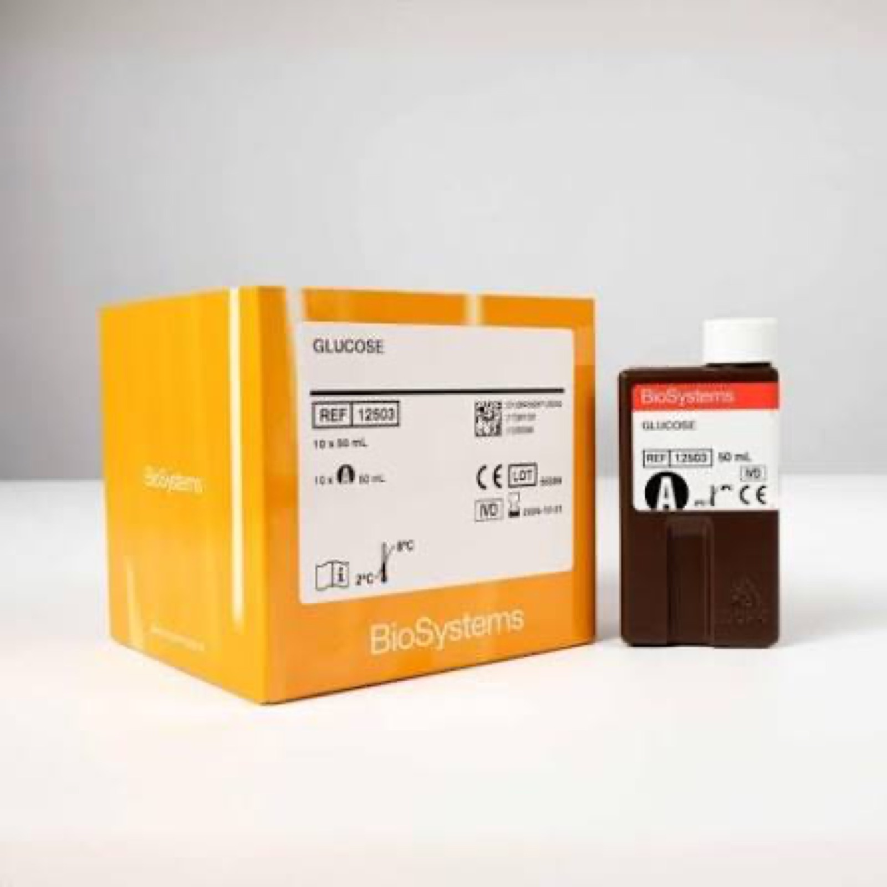

Laborteknic
Nos dedicamos a la importación de equipamiento y productos para el diagnóstico in vitro. Nuestro mayor capital es el humano: creemos que la fortaleza de los vínculos generados a través del asesoramiento profesional es la clave del éxito.
- Distribuidor exclusivo de BioSystems y Techlab en Argentina.
- Distribuidor oficial de Snibe y de Abbott Rapid Diagnostics, División Toxicología.
- Soporte técnico y bioquímico pre y post-venta en todas las líneas comercializadas.
- Respuesta rápida y capacidad de entender y resolver las necesidades del cliente.


Austral Farma

Austral Farma SRL es una prestigiosa droguería ubicada en la ciudad de Córdoba, que provee integralmente insumos y equipamiento a numerosas instituciones de salud de la provincia.
Áreas de suministro


BioSystems
Fundada por el Dr. Bach en 1981, BioSystems es una compañía global con sede en Barcelona (España) que fabrica equipamiento, reactivos e insumos para las áreas de Química Clínica y Autoinmunidad, sinónimo de calidad, robustez y confiabilidad europea.
Autoanalizadores y reactivos
Autoanalizadores semi y automáticos, consumibles y materiales de referencia diseñados para el volumen y flujo de cada laboratorio, junto a una línea completa de reactivos dedicados y generales.

BTS
Tecnología LED (340–670 nm), software intuitivo, mínimo mantenimiento.

A15
Capacidad óptima a bordo, configuración abierta y adaptable al usuario.

A25
Predilución y posdilución automáticas, bajo consumo de agua.

BA 400 / BA 200
Hasta 400–560 t/h, hemólisis automática, SMART LED, módulo ISE opcional.

Paneles de reactivos
Sistema completo de inmunofluorescencia

IPro
Procesador de inmunofluorescencia. Hasta 192 muestras, lector de código de barras y DataMatrix.

MIRA
Microscopio automatizado: escaneo de portaobjetos y trazabilidad completa por DataMatrix.
ARA
Plataforma de gestión de laboratorio: integra IPro y MIRA, almacena +100.000 imágenes, se integra al LIS.
Reactivos y kits
Línea completa de kits para improntas (uso manual) y kits ELISA: ANA-HEp-2, ANCA, nDNA, anti-endomisio y más, junto a los conjugados correspondientes.

Control de calidad externo
Sistema Internacional de Evaluación Externa de la Calidad: programa anual de comparación de resultados entre laboratorios, con mediciones mensuales y trimestrales, acreditado según la norma ISO 17043.
- Prevecal Bioquímica Humano
- Prevecal HEp-2 IFA — Anticuerpos anti-nucleares HEp-2
- Prevecal ANCA — Anticuerpos anti-citoplasma de neutrófilos
- Prevecal nDNA — Anticuerpos anti-nDNA
- Prevecal Celiac — Anti-endomisio, Anti-tTG, Anti-gliadina y DGP
Participación en línea a través de www.prevecal.net.

SNIBE
Shenzhen New Industries Biomedical Engineering Co., Ltd., fundada en 1995 en Shenzhen, China. Empresa biomédica especializada en instrumentos de laboratorio clínico y reactivos para diagnóstico in vitro, con un menú de más de 260 ensayos por CLIA.

MAGLUMI® X3
Sistema CLIA compacto. Hasta 200 pruebas/hora — 294 T/h/m². Ideal para laboratorios pequeños y medianos.

MAGLUMI® X6
Solución flexible para volumen medio/alto. Hasta 450 pruebas/hora, 112/412 muestras a bordo, hasta 2000 pruebas sin intervención.
Techlab
Establecida en Estados Unidos, Techlab diseña, desarrolla y fabrica kits rápidos de diagnóstico entérico distribuidos a nivel mundial. Certificación ISO 13485, acreditación MDSAP y registro ante la FDA.

Shiga Toxin Quik Chek®
Inmunoensayo enzimático rápido de membrana para la detección cualitativa simultánea y diferenciación de la toxina Shiga 1 (Stx1) y 2 (Stx2) en un único dispositivo.

C. Diff Quik Chek Complete®
Enzimoinmunoensayo rápido de membrana para la detección simultánea del antígeno GDH de Clostridium difficile y las toxinas A y B en un mismo pocillo.
Abbott Rapid Diagnostics — Toxicología
Abbott Rapid Diagnostics Argentina S.A. es la filial local de la división de diagnóstico de Abbott Laboratories. Laborteknic es Distribuidor Oficial para la División Toxicología: kits rápidos para la detección de abuso de drogas (cocaína, benzodiacepinas, THC, anfetaminas y más) y analizadores portátiles para detección en líquido bucal, con resultados en minutos.

SoToxa™
Sistema móvil para detección rápida de drogas en fluido oral, en el lugar de trabajo o en campo.

SureStep™
Paneles multi-droga en sangre y orina: AMP, BAR, BZO, COC, THC, MET, MOP y más.

ABON™
Cassettes y screening en orina y saliva, de 1 a 10 drogas por dispositivo.
Cerca del laboratorio, cerca de vos
La solidez de nuestra firma se centra en el valor que le brindamos al cliente, en la respuesta rápida y en la capacidad de entender y resolver sus necesidades.